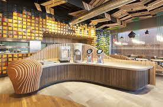
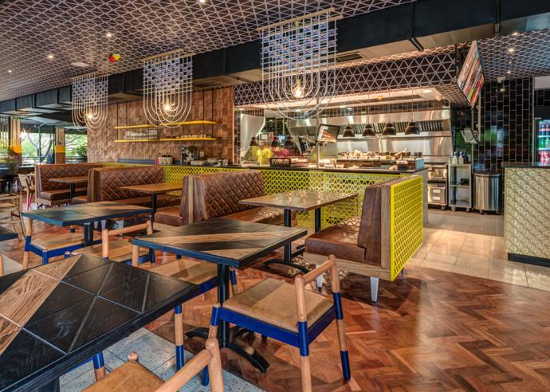

Chicken Licken

NANDOS

Nando's started way back in 1987, when the first restaurant opened in Rosettenville in Johannesburg, South Africa. We've come a long way since then, but we've never forgotten our humble beginnings. So, to remind us of our roots, all our headings are tilted at an 87 degree angle across all of our designs.
In the context of "cheeky Nandos" it just means going to get a Nandos, even though you probably shouldn't. The word is often used to refer to getting a quick drink after work - a "cheeky pint or two". It means quick, easy, carefree.
What is Nando's famous for? #DidYouKnow Nando's is famous for its legendary butterfly cut, PERi-PERi chicken - marinated for 24-hours before being flame-grilled and basted in your choice of addictive Nando's PERi-PERi sauce.
What makes Nandos different? Nando's unique selling point is that it is all about the family feel. It prides itself on its spicy chicken and it does seem that the Nando's peri-peri sauce remains its basic selling point, but it's the friendly atmosphere, both for workers and clientele, that keeps its fans loyal.